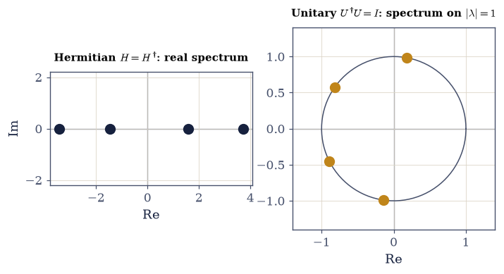

6.2 Linear Operators, Hermitian and Unitary Operators, and the Spectral Theorem#
Notebook overview#
In §6.1 we built the stage — the complex Hilbert space, where a quantum state is a unit vector. This notebook brings on the actors: the linear operators that act on those states. It is the heaviest notebook of Movement 0 and the most important, because it contains the single sentence that the rest of the volume is a commentary on — quantum mechanics is linear algebra on a complex Hilbert space. Once that is computational, so is everything built from it.
Two classes of operator carry the entire theory, and the notebook is organized around them. The first is the Hermitian operators, those equal to their own adjoint, \(A=A^{\dagger}\). We will prove — gently, but actually prove — that a Hermitian operator has real eigenvalues and an orthonormal eigenbasis. These two facts are exactly what an observable needs: real eigenvalues are the possible results of a measurement, and the orthonormal eigenvectors are the states with a definite value. The second class is the unitary operators, those satisfying \(U^{\dagger}U=I\). They preserve the inner product, hence norms, hence probabilities — which is precisely what a symmetry or a time evolution must do, since a state has to stay normalized. Their eigenvalues lie on the unit circle.
Binding the two classes is the spectral theorem: every Hermitian operator can be written
\(A=V\Lambda V^{\dagger}\), a diagonal matrix \(\Lambda\) of real eigenvalues conjugated by a unitary \(V\)
of orthonormal eigenvectors. This is the master computation of the volume — to understand a
Hermitian operator, diagonalize it — and numpy.linalg.eigh is its engine. A short bridge, the
exponential map \(U=e^{-iH}\), turns a Hermitian operator into a unitary one and previews the
deepest structural fact of dynamics: the Hamiltonian (a Hermitian observable) generates time
evolution (a unitary). We close with commuting operators, which share an eigenbasis and so are
the compatible observables, the ones that can be sharp at once.
As in every Volume VI notebook, each exercise opens with a crystal-clear statement and explicit enumerated parts that name the exact operation to run — numpy.linalg.eigh versus
numpy.linalg.eig, A.conj().T for the adjoint, scipy.linalg.expm for the matrix exponential,
the @ operator for composition — so the method is never something to reverse-engineer. The
difficulty lives in the mathematics, never in deciphering the question.
A word on notation (and its boundary). We write the spectral theorem here as a matrix factorization, \(A=V\Lambda V^{\dagger}\), obtained by diagonalization. Its equivalent and more eloquent form as a sum of projectors, \(A=\sum_\lambda \lambda\,|\lambda\rangle\langle\lambda|\), together with the general machinery of functions of operators \(f(A)=\sum_\lambda f(\lambda)\,|\lambda\rangle\langle\lambda|\), is the work of §6.3, once Dirac notation gives us the outer product \(|\lambda\rangle\langle\lambda|\) as an object. We use the exponential map \(U=e^{-iH}\) concretely here, via
scipy.linalg.expm; its place in the general theory is §6.3, and time evolution proper is §6.7.How to read the checks. Each exercise closes with a
validatecall against an independent fact: that operators compose by matrix multiplication and generally fail to commute; the adjoint identity \(\langle u|A^{\dagger}v\rangle=\langle Au|v\rangle\); a Hermitian operator’s real spectrum and orthonormal eigenbasis; the factorization \(A=V\Lambda V^{\dagger}\) to machine precision; a unitary’s inner-product preservation and unit-circle spectrum; that \(e^{-iH}\) is unitary with eigenvalues \(e^{-i\lambda}\); that commuting operators share an eigenbasis; and the Pauli algebra. A ✓ is strong evidence; a ✗ is a prompt to locate the discrepancy.Scope. Operators on a finite-dimensional complex space, and the spectral theorem in matrix form. Dirac notation and the projector form are §6.3; the measurement postulate (eigenvalues as outcomes, \(|\langle\lambda|\psi\rangle|^2\) as probabilities) is §6.5; commutators and uncertainty are §6.6; time evolution is §6.7. See Sakurai & Napolitano (Ch. 1); Nielsen & Chuang; Axler; and Notebooks §6.1 (the inner-product space), §0.4–§0.5 (eigenvalue problems).
Theory in brief#
Linear operators as matrices#
A linear operator \(A\) sends states to states linearly, \(A(a|u\rangle+b|v\rangle)=aA|u\rangle+ bA|v\rangle\). In an orthonormal basis it is a matrix, with entries the inner products
so acting on a state is matrix–vector multiplication and composing operators is matrix multiplication
(@). Unlike numbers, operators generally do not commute, \(AB\ne BA\) — a fact we flag now and
build the whole theory of measurement on later.
The adjoint#
The adjoint \(A^{\dagger}\) is defined by \(\langle u|A^{\dagger}v\rangle=\langle Au|v\rangle\) for all \(u,v\). In an orthonormal basis it is the conjugate transpose,
It is the operator analogue of complex conjugation, and the order reverses under a product.
Hermitian operators — the observables#
An operator is Hermitian (self-adjoint) if \(A=A^{\dagger}\). Two theorems follow, and both are proved gently in the exercises:
Real eigenvalues: if \(A|\lambda\rangle=\lambda|\lambda\rangle\) then \(\langle\lambda|A|\lambda\rangle
=\lambda\langle\lambda|\lambda\rangle\); but \(\langle\lambda|A|\lambda\rangle\) equals its own conjugate
(because \(A=A^{\dagger}\)), so it is real, and \(\langle\lambda|\lambda\rangle>0\) is real — hence
\(\lambda\) is real. Orthogonal eigenvectors: for \(A|a\rangle=a|a\rangle\), \(A|b\rangle=b|b\rangle\)
with \(a\ne b\), computing \(\langle b|A|a\rangle\) two ways gives \((a-b)\langle b|a\rangle=0\), so
\(\langle b|a\rangle=0\). A Hermitian operator therefore has an orthonormal eigenbasis. Physically,
Hermitian operators are the observables: real eigenvalues are the possible measurement results,
orthonormal eigenvectors the definite-value states (the measurement postulate is §6.5).
numpy.linalg.eigh is the tool — it exploits \(A=A^{\dagger}\) to return real eigenvalues and
orthonormal eigenvectors, where the general numpy.linalg.eig would not.
The spectral theorem#
Collecting the orthonormal eigenvectors as the columns of a matrix \(V\) and the real eigenvalues on the diagonal of \(\Lambda\), the eigenvalue equation \(AV=V\Lambda\) rearranges into the spectral theorem,
To understand a Hermitian operator, diagonalize it. (The projector form \(A=\sum_\lambda\lambda\, |\lambda\rangle\langle\lambda|\) is §6.3.)
Unitary operators — the symmetries and dynamics#
An operator is unitary if \(U^{\dagger}U=I\) (so \(U^{\dagger}=U^{-1}\)). Unitary operators preserve the inner product, and therefore probabilities,
Their eigenvalues lie on the unit circle. Physically, unitary operators are the symmetries (rotations, reflections, basis changes) and the dynamics (time evolution is unitary, §6.7).
The exponential map: from Hermitian to unitary#
The two classes are linked by the exponential. For Hermitian \(H\),
which we compute with scipy.linalg.expm. This is the seed of dynamics: a Hermitian observable —
the Hamiltonian, energy — generates a unitary, \(U(t)=e^{-iHt/\hbar}\) (§6.7).
Setup#
import matplotlib.pyplot as plt
import numpy as np
from scipy.linalg import expm
from ecp import draw, validate
ACCENT, INK, SOFT = draw.ACCENT, draw.INK, draw.SOFT
RED = "#c1121f"
# Conventions: operators are matrices in a fixed orthonormal basis of finite-dimensional
# ℂⁿ; the adjoint A† is the conjugate transpose A.conj().T; the inner product ⟨u|v⟩ = numpy.vdot(u, v)
# (conjugate-first, from §6.1). We diagonalize Hermitian operators with numpy.linalg.eigh (real spectra,
# orthonormal eigenvectors) — NOT numpy.linalg.eig, which is for general matrices and returns neither.
# the Pauli matrices — the canonical Hermitian operators, used throughout (and the spin observables of
# Movement I)
SX = np.array([[0, 1], [1, 0]], dtype=complex)
SY = np.array([[0, -1j], [1j, 0]], dtype=complex)
SZ = np.array([[1, 0], [0, -1]], dtype=complex)
def adjoint(A):
"""The adjoint (Hermitian conjugate) $A^{\\dagger}=(A^{*})^{\\mathsf T}$ {eq}`eq-adjoint`.
In an orthonormal basis the adjoint is the conjugate transpose, computed as ``A.conj().T``. It is
defined abstractly by $\\langle u|A^{\\dagger}v\\rangle=\\langle Au|v\\rangle$ for all $u,v$, and is
the operator analogue of complex conjugation.
Parameters
----------
A : numpy.ndarray
A square complex matrix.
Returns
-------
numpy.ndarray
The conjugate transpose of ``A``.
"""
return A.conj().T
def is_hermitian(A, tol=1e-12):
"""Test whether ``A`` is Hermitian, $A=A^{\\dagger}$ {eq}`eq-hermitian`.
Compares ``A`` with its conjugate transpose (``A.conj().T``) using ``numpy.allclose``. A Hermitian
operator is an observable: its eigenvalues (real) are the possible measurement outcomes.
Parameters
----------
A : numpy.ndarray
A square complex matrix.
tol : float, optional
Absolute tolerance passed to ``numpy.allclose``.
Returns
-------
bool
``True`` if ``A`` equals its adjoint to within ``tol``.
"""
return np.allclose(A, adjoint(A), atol=tol)
def is_unitary(U, tol=1e-12):
"""Test whether ``U`` is unitary, $U^{\\dagger}U=I$ {eq}`eq-unitary`.
Checks that the adjoint times the operator is the identity, via ``numpy.allclose(U.conj().T @ U,
numpy.eye(n))``. A unitary operator preserves inner products and hence probabilities — the
symmetries and the dynamics.
Parameters
----------
U : numpy.ndarray
A square complex matrix.
tol : float, optional
Absolute tolerance passed to ``numpy.allclose``.
Returns
-------
bool
``True`` if $U^{\\dagger}U=I$ to within ``tol``.
"""
n = U.shape[0]
return np.allclose(adjoint(U) @ U, np.eye(n), atol=tol)
def spectral_decomposition(H):
"""Diagonalize a Hermitian operator, $H=V\\Lambda V^{\\dagger}$ {eq}`eq-ops-spectral`.
Wraps ``numpy.linalg.eigh``, which exploits Hermiticity to return **real** eigenvalues (ascending)
and an **orthonormal** matrix of eigenvectors ``V`` (the eigenvectors are its columns). The matrix
form $H=V\\Lambda V^{\\dagger}$ returned here is recast as a sum of projectors $H=\\sum_\\lambda
\\lambda|\\lambda\\rangle\\langle\\lambda|$ in §6.3.
Parameters
----------
H : numpy.ndarray
A Hermitian matrix.
Returns
-------
eigenvalues : numpy.ndarray
The real eigenvalues, ascending.
V : numpy.ndarray
The unitary matrix whose columns are the orthonormal eigenvectors.
"""
eigenvalues, V = np.linalg.eigh(H)
return eigenvalues, V
def commutator(A, B):
"""The commutator $[A,B]=AB-BA$ {eq}`eq-commute`.
Computed with the matrix-multiply operator ``@``. It vanishes exactly when $A$ and $B$ share a
common eigenbasis — the algebraic signature of *compatible* observables.
Parameters
----------
A, B : numpy.ndarray
Square matrices of equal shape.
Returns
-------
numpy.ndarray
The commutator ``A @ B - B @ A``.
"""
return A @ B - B @ A
Exercise 1 — Operators as matrices#
Let \(A\) and \(B\) be the two operators on \(\mathbb{C}^4\) defined below, and let \(|\psi\rangle=(1,\ i,\ 0,\ 2)^{\mathsf T}\). Compute the action \(A|\psi\rangle\), verify that \(A\) acts linearly, and show that \(A\) and \(B\) do not commute (\(AB\ne BA\)) Eq. 385.
Build the matrices \(A\) and \(B\) as complex
numpy.ndarrays and the state \(|\psi \rangle\).Act on the state with the matrix–vector product
A @ psi.Verify linearity by checking
A @ (a*u + b*v)equalsa*(A @ u) + b*(A @ v)withnumpy.allclose.Compose the operators both ways with
A @ BandB @ Aand confirm they differ (numpy.allclose(A @ B, B @ A)isFalse) — operators are matrices, and matrices need not commute.
A|ψ⟩ = [1.+0.j 2.+0.j 0.+2.j 0.+1.j]
linear: A(a|u⟩+b|v⟩) = a A|u⟩ + b A|v⟩ ? True
AB = BA ? False (so AB ≠ BA: True)
‖AB − BA‖ = 5.657
Validation 1#
✓ operators are matrices acting on states by matrix multiplication, and they need not commute (AB ≠ BA)
True
Exercise 2 — The adjoint and its algebra#
For the operator \(A\) of Exercise 1, form its adjoint \(A^{\dagger}\) and verify both the defining property \(\langle u|A^{\dagger}v\rangle=\langle Au|v\rangle\) (for arbitrary \(u,v\)) and the algebra \((A^{\dagger})^{\dagger}=A\) and \((AB)^{\dagger}=B^{\dagger}A^{\dagger}\) Eq. 386.
Form the adjoint as the conjugate transpose with
A.conj().T(theadjointhelper).Verify the defining property: compute \(\langle u|A^{\dagger}v\rangle\) as
numpy.vdot(u, adjoint(A) @ v)and \(\langle Au|v\rangle\) asnumpy.vdot(A @ u, v), and compare them.Verify the algebra with
numpy.allclose: thatadjoint(adjoint(A))equalsA, and thatadjoint(A @ B)equalsadjoint(B) @ adjoint(A)(note the order reverses).
⟨u|A†v⟩ = 0.0000+2.0000j
⟨Au|v⟩ = 0.0000+2.0000j (equal: True)
(A†)† = A ? True
(AB)† = B†A† ? True (and (AB)† = A†B† ? False — the order matters)
Validation 2#
✓ the adjoint satisfies its defining property ⟨u|A†v⟩ = ⟨Au|v⟩ [got 2j vs expected 2j (rtol=1e-12)]
✓ the adjoint algebra holds: (A†)† = A and (AB)† = B†A† (the order reverses)
True
Exercise 3 — Hermitian operators: real eigenvalues and an orthonormal eigenbasis#
Construct a Hermitian operator \(H\) on \(\mathbb{C}^4\), and verify the two theorems that make Hermitian operators the observables: its eigenvalues are real, and its eigenvectors form an orthonormal basis Eq. 387.
Build a Hermitian \(H\) by symmetrizing a random complex matrix,
H = M + M.conj().T(this guarantees \(H=H^{\dagger}\); confirm with theis_hermitianhelper).Recall the proof: real eigenvalues follow because \(\langle\lambda|H|\lambda\rangle\) is both \(\lambda\langle\lambda|\lambda \rangle\) and its own conjugate; orthogonality of distinct-eigenvalue eigenvectors follows from \((a-b)\langle b|a\rangle=0\).
Diagonalize with
numpy.linalg.eigh(thespectral_decompositionhelper) — notnumpy.linalg.eig, becauseeighis built for Hermitian matrices and returns real eigenvalues and orthonormal eigenvectors.Confirm the eigenvalues are real (
eighreturns a real array) and the eigenvector matrix is orthonormal, \(V^{\dagger}V=I\) (numpy.allclose(adjoint(V) @ V, numpy.eye(4))).
is_hermitian(H) ? True
eigenvalues (all real): [-3.4299 -1.4705 1.5777 3.7121]
eigenvectors orthonormal, V†V = I ? True
Validation 3#
✓ a Hermitian operator has real eigenvalues and an orthonormal eigenbasis — the mathematical signature of an observable
True
Exercise 4 — The spectral theorem: diagonalization#
For the Hermitian operator \(H\) of Exercise 3, assemble its spectral factorization \(H=V\Lambda V^{\dagger}\) from the eigenvalues and eigenvectors, and verify both the factorization and the eigenvalue equation \(HV=V\Lambda\) to machine precision Eq. 388.
Take the eigenvalues and eigenvector matrix \(V\) from
numpy.linalg.eigh(already computed in Exercise 3).Form the diagonal matrix \(\Lambda\) with
numpy.diag(eigenvalues).Reconstruct \(V\Lambda V^{\dagger}\) with the matrix products
V @ Lam @ adjoint(V)and compare it to \(H\) vianumpy.max(numpy.abs(H - V @ Lam @ adjoint(V))).Separately confirm the eigenvalue equation
H @ VequalsV @ Lamwithnumpy.allclose, and note that \(V\) is unitary (is_unitary(V)) — the change of basis that diagonalizes \(H\). To understand a Hermitian operator, diagonalize it — the master computation of the volume.
spectral theorem H = VΛV†: max|H − VΛV†| = 2.4e-15
eigenvalue equation HV = VΛ ? True
V unitary (the diagonalizing change of basis) ? True
Validation 4#
✓ the spectral theorem: every Hermitian operator factorizes as H = VΛV† with V unitary and Λ real diagonal [got 2.44249e-15 vs expected 0 (rtol=1e-06)]
True
Exercise 5 — Unitary operators: the symmetries and dynamics#
Build a unitary operator \(U\) on \(\mathbb{C}^4\) and verify the properties that make unitary operators the symmetries and dynamics: \(U^{\dagger}U=I\), preservation of the inner product (\(\langle Uu|Uv\rangle=\langle u|v\rangle\)) and norm, and eigenvalues on the unit circle (\(|\lambda| =1\)) Eq. 389.
Build a unitary by taking the
numpy.linalg.qrfactorization of a random complex matrix and keeping the \(Q\) factor (its columns are orthonormal, so \(Q\) is unitary).Verify \(U^{\dagger}U=I\) with the
is_unitaryhelper.Verify inner-product preservation: compare
numpy.vdot(U @ u, U @ v)withnumpy.vdot(u, v), and norm preservation withnumpy.linalg.norm.Compute the eigenvalues with
numpy.linalg.eigvals(the general eigenvalue routine — \(U\) is not Hermitian) and confirmnumpy.abs(eigenvalues)is all ones — they lie on the unit circle.
is_unitary(U) ? True
⟨Uu|Uv⟩ = ⟨u|v⟩ ? True; ‖Uψ‖ = ‖ψ‖ ? True
|eigenvalues(U)| = [1. 1. 1. 1.] → on the unit circle: True
Validation 5#
✓ unitary operators preserve the inner product, the norm, and probabilities, with eigenvalues on the unit circle — the symmetries and dynamics
True
findfont: Failed to find font weight 600, now using 700.
findfont: Failed to find font weight 600, now using 700.

Fig. 422 The two operator classes, side by side in the complex plane. Left: a Hermitian operator’s eigenvalues (ink) lie on the real axis — they are real, and they are the possible outcomes of measuring the observable. Right: a unitary operator’s eigenvalues (amber) lie on the unit circle \(|\lambda|=1\) (grey) — the operator moves states around without changing their length, and so conserves probability. This single picture is the geometric heart of the volume: what we measure is Hermitian (real), and how states evolve is unitary (norm-preserving).#
Exercise 6 — From Hermitian to unitary: the exponential map#
Show that for any Hermitian \(H\), the operator \(U=e^{-iH}\) is unitary, and that its eigenvalues are \(e^{-i\lambda_j}\) where \(\lambda_j\) are the (real) eigenvalues of \(H\) — so the real spectrum of \(H\) is mapped onto the unit circle Eq. 390.
Compute the matrix exponential \(U=e^{-iH}\) with
scipy.linalg.expm(-1j * H)(the matrix exponential — notnumpy.exp, which would act element-by-element).Verify \(U\) is unitary with the
is_unitaryhelper.Confirm the spectrum maps as claimed: compare the sorted eigenvalues of \(U\) (
numpy.linalg.eigvals) against \(e^{-i\lambda_j}\) formed from \(H\)’s eigenvalues withnumpy.exp(-1j * eigenvalues).Read the meaning: a Hermitian observable (energy, the Hamiltonian) generates a unitary (time evolution) through this map, \(U(t)=e^{-iHt/\hbar}\) — the structural heart of dynamics (§6.7).
U = e^(−iH): is_unitary(U) ? True
eigenvalues(U) = e^(−iλ) ? True
|eigenvalues(U)| = [1. 1. 1. 1.] (all on the unit circle)
Validation 6#
✓ the exponential map U = e^(−iH) sends a Hermitian operator to a unitary one, with eigenvalues e^(−iλ) — observables generate dynamics
True
Exercise 8 — The Pauli matrices as the canonical Hermitian operators#
For the three Pauli matrices \(\sigma_x,\sigma_y,\sigma_z\) (defined in the setup as SX, SY, SZ),
verify that each is Hermitian with eigenvalues \(\pm1\) and squares to the identity (\(\sigma^2=I\)),
and that they do not commute — specifically \([\sigma_x,\sigma_y]=2i\sigma_z\)
Eq. 387, Eq. 391.
Take the three matrices
SX, SY, SZfrom the setup.For each, confirm Hermiticity with
is_hermitian, compute its eigenvalues withnumpy.linalg.eigvalsh(the eigenvalue-only routine for Hermitian matrices) and confirm they are \(\pm1\), and check \(\sigma^2=I\) withSX @ SXandnumpy.allclose.Compute the commutator with the
commutatorhelper and confirmcommutator(SX, SY)equals `2jSZ
(numpy.allclose`). Frame: these are the spin observables of Movement I; their non-commutation is the source of the uncertainty between spin components (§6.6).
σx: Hermitian True, eigenvalues [-1. 1.], σ² = I True
σy: Hermitian True, eigenvalues [-1. 1.], σ² = I True
σz: Hermitian True, eigenvalues [-1. 1.], σ² = I True
[σx, σy] = 2iσz ? True (so σx and σy do not commute)
Validation 8#
✓ the Pauli matrices are Hermitian with eigenvalues ±1 and σ²=I, and [σx,σy]=2iσz — their non-commutation foreshadows incompatible observables
True
Exercise 9 — The actors on the stage#
We now have the actors. Operators are what act on states, and in a basis they are matrices, so every question about them is a matrix computation. Two classes carry the physics. Hermitian operators, \(A=A^{\dagger}\), have real spectra and orthonormal eigenbases — they are the observables, their eigenvalues the possible measurements and their eigenvectors the definite-value states. Unitary operators, \(U^{\dagger}U=I\), preserve the inner product and hence probabilities — they are the symmetries and the dynamics. The exponential map \(U=e^{-iH}\) ties the two together, and is the seed of the statement that energy generates time. And the spectral theorem, \(A=V\Lambda V^{\dagger}\) — diagonalize, and the operator becomes transparent — is the one computation we will run again and again, from the qubit to the hydrogen atom.
This exercise (synthesis). No new computation: the machinery is the result. Two facts will carry the entire volume, and we have now established both. Observables are Hermitian, so what we measure is real; evolution is unitary, so probability is conserved. Everything else — the postulates, uncertainty, dynamics, the spectra of real systems — is diagonalization on the space of §6.1. The next notebook (§6.3) gives all of this its proper language, Dirac notation, where the spectral theorem becomes a sum of projectors \(A=\sum_\lambda\lambda\,|\lambda\rangle\langle\lambda|\) and operators acquire their cleanest form.
Notebook summary#
The actors on the Hilbert-space stage: linear operators, and the two classes that run quantum mechanics.
Operators are matrices Eq. 385: \(A_{ij}=\langle e_i|A|e_j\rangle\), acting by
@and composing by@; in general \(AB\ne BA\).The adjoint Eq. 386: \(A^{\dagger}=\)
A.conj().T, defined by \(\langle u|A^{\dagger}v \rangle=\langle Au|v\rangle\), with \((AB)^{\dagger}=B^{\dagger}A^{\dagger}\).Hermitian operators are the observables Eq. 387: \(A=A^{\dagger}\) forces real eigenvalues and an orthonormal eigenbasis (both proved);
numpy.linalg.eighis the tool.The spectral theorem Eq. 388: \(A=V\Lambda V^{\dagger}\) to machine precision — to understand a Hermitian operator, diagonalize it. (Projector form: §6.3.)
Unitary operators are the symmetries and dynamics Eq. 389: \(U^{\dagger}U=I\) preserves inner products, norms, and probabilities; eigenvalues on the unit circle.
The exponential map Eq. 390: \(U=e^{-iH}\) (via
scipy.linalg.expm) is unitary for Hermitian \(H\), eigenvalues \(e^{-i\lambda}\) — energy generates evolution (§6.7).Commuting operators share an eigenbasis Eq. 391: \([A,B]=0\) means compatible, simultaneously definite observables; the Pauli matrices, with \([\sigma_x,\sigma_y]=2i\sigma_z\), are the canonical non-commuting example.
Two facts carry the volume: observables are Hermitian, so what we measure is real; evolution is unitary, so probability is conserved. Everything else is diagonalization.
Outlook#
Dirac notation made formal (§6.3). The spectral theorem as a sum of projectors \(A=\sum_\lambda \lambda\,|\lambda\rangle\langle\lambda|\), the resolution of the identity, and functions of operators \(f(A)=\sum_\lambda f(\lambda)\,|\lambda\rangle\langle\lambda|\).
The measurement postulate (§6.5). Eigenvalues as outcomes, \(|\langle\lambda|\psi\rangle|^2\) as probabilities, projectors as the measurement.
Commutators and uncertainty (§6.6). Where non-commuting observables — the Pauli matrices among them — give the uncertainty relation, grown from the Cauchy–Schwarz inequality of §6.1.
Time evolution (§6.7). The unitary generated by the Hamiltonian, \(U(t)=e^{-iHt/\hbar}\).
Cross-reference §6.1 (the inner-product space), §0.4–§0.5 (eigenvalue problems), and forward to §6.3, §6.5, §6.6, §6.7.